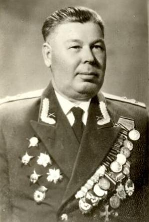

Харюков Геннадий Алексеевич
Родился в 1914 году в д.Павликов Дор Верхнеенангского сельсовета. После окончания в 1932 году Никольского педагогического училища работал учителем. Затем по направлению комсомола поступает и оканчивает 20-е Ленинградское военное артиллерийское училище. На фронтах Великой Отечественной войны с 1941 по 1945 годы. За ратные подвиги награждён двумя орденами Красного Знамени, тремя орденами Отечественной войны, тремя орденами Красной Звезды, многими медалями. Участник Парада Победы в Москве 24 июня 1945 года. После войны остался на службе в Вооружённых Силах СССР и закончил службу в звании полковника.